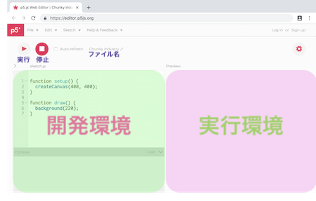

開発環境と実行環境のインターフェイス
p5.jsとは？
p5.jsはJavaScriptをベースとした、クリエイティブコーディング指向のフレームワーク
jsで書かれているため、webページへの実装が容易に可能
実行環境は主にブラウザ上となる
開発環境
- p5.js Web Editorを開く
- Home/Start/p5.js Web Editorのパスでもおk
- まずはsignUpでアカウント作成
- signInすればクラウド上にファイル保存可能
インターフェイス
p5jsウェブエディタはウェブアプリとして作られた統合開発環境（IDE）
Hello, World!
- 初めてのコーディングとして"Hello, World!"を出力する
- プログラムの入力は半角英数絶対！
- 文末にはセミコロン忘れるな！
- 括弧は開いたら閉じる！
-
初期化関数（赤）：
起動時に一度しか読まれない関数 -
メインループ関数（緑）：
実行されたら、停止するまで繰り返される関数 -
組込関数（青）：
フレームワークやライブラリに組み込まれ、処理が設定されている関数 - setupという初期化関数のなかにcreateCanvasという組込関数が入っている
- drawというメインループ関数のなかに、backgroundと、textという組込関数が入っている
- 関数後ろの()のなかに入れて渡すものが引数
- その関数で返ってくる値が返り値（戻り値）
- 初期化・メインループ関数は引数をもたない
- 引数で渡せる値の数は、関数の種類よって違う（リファレンスを見るとわかる）
- 組込関数にも引数を持たない関数もある
- 中心に線を引いてみる
- テキストを中心に移動する
- コメントアウトでラインを消す
- キャンバスサイズを変える
- 相対的な関係性を見つける
- 組込変数
- createCanvasで設定した値を、戻り値として返す
- X方向の幅（width）
- Y方向の幅(height)
function setup() {
createCanvas(400, 400);
}
function draw() {
background(220);
text('Hello, World!', 200, 200);
}
関数
固有の処理を行って値を返すもの
中には実行処理が書かれる
引数と戻り値
関数の入力と出力
どちらもないものもある
テキストの書き出し原点がわかる
function setup() {
createCanvas(400, 400);
}
function draw() {
background(220);
text('Hello, World!', 200, 200);
line(200, 0, 200, 400);
line(0, 200, 400, 200);
}
まずは目分量でハードコーディング
function setup() {
createCanvas(400, 400);
}
function draw() {
background(220);
text('Hello, World!', 165, 205);
line(200, 0, 200, 400);
line(0, 200, 400, 200);
}
//（スラッシュ二つ）で該当行を読み飛ばすことが可能
複数行の場合は/* + */
function setup() {
createCanvas(400, 400);
}
function draw() {
background(220);
text('Hello, World!', 165, 205);
//line(200, 0, 200, 400);
//line(0, 200, 400, 200);
}
ハードコーディングのため、テキスト位置がずれる
function setup() {
createCanvas(500, 300);
}
function draw() {
background(220);
text('Hello, World!', 165, 205);
//line(200, 0, 200, 400);
//line(0, 200, 400, 200);
}
相対関係を見つけることで、サイズの変化に対応
レスポンシブ
widthとheight
function setup() {
createCanvas(500, 300);
}
function draw() {
background(220);
text('Hello, World!', width / 2 - 35 , height / 2 + 5);
//line(200, 0, 200, 400);
//line(0, 200, 400, 200);
}